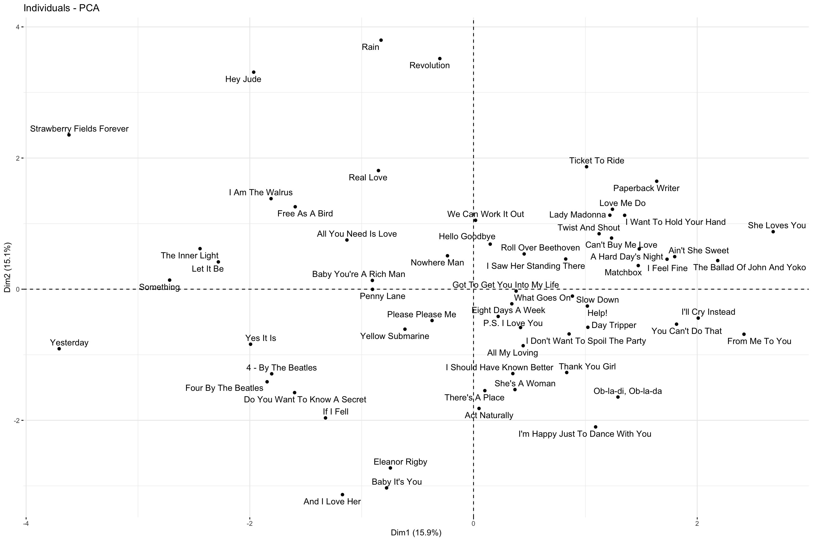

music <- read.csv("https://ajohns24.github.io/data/billboard.csv")
my_artist <- music %>%
filter(performer == "The Beatles") %>%
select(-performer) %>%
group_by(song) %>% # The last rows deal w songs that appear more than once
slice_sample(n = 1)%>%
ungroup()
my_artist <- my_artist%>%
select(-c(time_signature))
my_artist<- my_artist %>%
column_to_rownames("song")Clustering
Beatles Music Analysis - Beats & Hits

Data import and cleaning
Clustering analysis
We used hierarchical clustering to generate a dendrogram of the processed beetles dataset using the 14 features. By analyzing the Dendrogram, it seemed like choosing 6 clusters seemed to be the ideal clustering choice.
We also generated a heap map of the scaled dataset to capture the differences and patterns of features in between the difference clusters. Through analysis, we identified some features for which the clusters seemed to have unique values. For example, in the heatmap below, the largest cluster in the middle seems to have a very different mode value than the cluster immediately below it and also above it. But in general the different clusters doesn’t seem to have very unique identifying values, this could be because most songs of beetles are similar in terms of loudness, speechiness and even spotify popularity.
We created a grid plot of “average feature value” vs the “cluster label” for each of the 14 features. One of the interesting cluster was the singular cluster with the song “Rain”. For the singular cluster consisting of “Rain” (i.e cluster 5), the clustering algorithm separated it from the rest in the beginning because it has some very distinct features. The song rain has a danceability level of 0 while all the other clusters have it at 1, has the highest level of instrumentalness and liveliness. These unique characteristics might have caused this to be the first split.
Generally, all the clusters seem to have different average values of features seen strongly in features such as “bill board weeks”, “loudness” etc. But for features such as popularity and speechiness, the clustering didn’t do a great differentiation between the different clusters. The reason could be that almost all of the songs of the Beatles are quite popular on spotify and catching the subtle differences in popularity would require a lot more clusters.Moreover we had to remove certain features such as “time signature” due to zero variance in it. This highlights the a good level of similarity in Beatles songs when it comes to certain musical features.
Since one of the drawbacks of hierarchical clustering is that the choice of k+1 cluster is based on the best k clusters, the 6 clusters that were identified might not be the best 6 clusters, and due to it could be possible that there is a better clustering possible for identifying 6 clusters. Also the fact that one cluster was huge while the others had only few songs, highlights that the need to explore more advanced clustering algorithms.
Code and plots
#Heat map
set.seed(253)
heatmap(scale(my_artist), Colv = NA, cexRow = 0.3)
beatles_cluster <- hclust(dist(scale(my_artist)), method = "complete")
# Dendrogram
fviz_dend(
beatles_cluster,
k = 6,
cex = 0.7,
k_colors = "jco",
rect = TRUE,
rect_fill = TRUE,
rect_border = "jco",
labels_track_height = 0.8,
main = "Hierarchical Clustering Dendrogram (6 Clusters)",
xlab = "Songs",
ylab = "Height",
ggtheme = theme_minimal()
)
cluster_data <- my_artist %>%
mutate(hier_cluster_k = as.factor(cutree(beatles_cluster, k = 6)))
groupLabelling<- cluster_data %>%
group_by(hier_cluster_k)%>%
count()
result <- cluster_data %>%
group_by(hier_cluster_k) %>%
summarize_all(mean)
long_result <- result %>%
pivot_longer(cols = -hier_cluster_k, names_to = "variable", values_to = "value")
#Grid Plot
ggplot(long_result, aes(x = hier_cluster_k, y = value)) +
geom_point(size = 3, alpha = 0.7, color = "steelblue") + # Adjust size and transparency
facet_wrap(~variable, scales = "free_y", ncol = 3) + # Arrange facets in 3 columns
labs(
title = "Cluster Metrics Across Different Hierarchical Cluster Numbers",
subtitle = "Each panel represents a metric; points show metric values for each cluster count",
x = "Number of Clusters (k)",
y = "Metric Value"
) +
theme_minimal(base_size = 14) + # Clean theme with larger font size
theme(
strip.text = element_text(face = "bold"), # Bold facet titles
axis.text.x = element_text(angle = 45, hjust = 1) # Rotate x-axis labels
)#mean and count information
kable(groupLabelling)| hier_cluster_k | n |
|---|---|
| 1 | 17 |
| 2 | 36 |
| 3 | 3 |
| 4 | 2 |
| 5 | 1 |
| 6 | 2 |
kable(result)| hier_cluster_k | duration_ms | danceability | energy | key | loudness | mode | speechiness | acousticness | instrumentalness | liveness | valence | tempo | spotify_popularity | billboard_weeks |
|---|---|---|---|---|---|---|---|---|---|---|---|---|---|---|
| 1 | 182667.4 | 0.5358824 | 0.4556471 | 2.764706 | -9.833706 | 0.5882353 | 0.0335412 | 0.4832412 | 0.0003789 | 0.1941529 | 0.6311176 | 113.4502 | 61.82353 | 7.000000 |
| 2 | 154039.7 | 0.5421667 | 0.7010833 | 4.194444 | -7.675667 | 0.9722222 | 0.0408556 | 0.2931006 | 0.0102646 | 0.1854000 | 0.8209167 | 121.2220 | 59.50000 | 9.527778 |
| 3 | 308333.0 | 0.4130000 | 0.5936667 | 9.000000 | -8.017333 | 1.0000000 | 0.0281667 | 0.0392667 | 0.0109379 | 0.1626667 | 0.4800000 | 155.8663 | 60.00000 | 12.333333 |
| 4 | 149600.0 | 0.5810000 | 0.5635000 | 6.000000 | -7.092000 | 1.0000000 | 0.0338500 | 0.4627900 | 0.0057026 | 0.3645000 | 0.8145000 | 127.0055 | 1.50000 | 7.500000 |
| 5 | 181320.0 | 0.2340000 | 0.6930000 | 0.000000 | -8.277000 | 1.0000000 | 0.0408000 | 0.0000282 | 0.8990000 | 0.4420000 | 0.5410000 | 106.9330 | 51.00000 | 7.000000 |
| 6 | 226306.5 | 0.3985000 | 0.6680000 | 8.000000 | -10.750500 | 1.0000000 | 0.1930000 | 0.2047000 | 0.0001740 | 0.1561500 | 0.4995000 | 109.6255 | 70.00000 | 10.000000 |
Dimension reduction analysis
Write-up
From the UWC Event playlist :

For PC1, the strongest positively correlated features are energy, valence and loudness. These are negatively correlated with duration_ms. Given the definitions of these features: Energy - represents a perceptual measure of intensity and activity Valence - describes the musical positiveness conveyed by a track. Loudness - The overall loudness of a track in decibels (dB). Duration_ms - The duration of the track in milliseconds. It makes sense that loud, high energy and positive music would fall into a similar category. Based on PC1, these songs are likely to be on the shorter side.
For PC2, danceability and acousticness have the strongest positive correlation, even though they are negatively correlated with the other features. Danceability is how “suitable a track is for dancing based on a combination of musical elements including tempo, rhythm stability, beat strength, and overall regularity”. There is a wide range of genres that are categorized as commonly danceable. On the other hand, acousticness is defined as “A confidence measure from 0.0 to 1.0 of whether the track is acoustic’’, which could be broken down further into “(of popular music or musical instruments) not having electrical amplification”. Therefore, it refers mostly to songs commonly associated with ballads, or slow. Initially, using these two definitions, we observed that the genre they fall in are vastly different and therefore we would not have predicted that they would be correlated. However, after talking as a team we realized that ballads (for example, Ed Sheeran songs) are usually used in spaces like weddings, and they may be more commonly danced to in western societies. From here we reflected that our contexts strongly impact what we understand as danceable or acoustic. In order to evaluate this, we explored the developer site from Spotify (https://developer.spotify.com/documentation/web-api/reference/get-audio-features), where they described how the values of these features are produced using human-trained algorithms. Coming back to our point about context and bias informing our understanding of these features, these values are highly subjective and make it really hard to have reliable predictions of how a song may sound or its characteristics.
If we wanted to retain at least 80% of the information in the original features of our dataset, we would need to keep around 8 PCs. Based on the graphs of cumulative percentage variance explained by our model, they begin to plateau at around this cut off which justifies this value. Because the songs from The Beatles are very similar across the board, more PCs (8) are needed to keep most of the variation.
Definition of audio features: https://developer.spotify.com/documentation/web-api/reference/get-audio-features
Code and plots
#PCA training
pca_my_artist <- prcomp(my_artist, scale = TRUE, center = TRUE)
kable(pca_my_artist %>%
pluck("rotation")%>%
head(3))| PC1 | PC2 | PC3 | PC4 | PC5 | PC6 | PC7 | PC8 | PC9 | PC10 | PC11 | PC12 | PC13 | PC14 | |
|---|---|---|---|---|---|---|---|---|---|---|---|---|---|---|
| duration_ms | -0.3572387 | 0.2676061 | -0.0119590 | -0.1556229 | 0.2004203 | 0.2119141 | -0.1730681 | 0.5240150 | -0.3786302 | 0.1906680 | -0.2557595 | -0.2877804 | -0.2330513 | 0.0672855 |
| danceability | 0.1800042 | -0.4302920 | -0.1323784 | -0.2805384 | 0.0393966 | 0.1429120 | 0.1609638 | -0.0815642 | 0.3135827 | 0.3175491 | -0.5930300 | -0.2775929 | 0.0115264 | -0.0603044 |
| energy | 0.5171017 | 0.3435514 | 0.0233856 | -0.0523940 | 0.0336113 | -0.1276263 | -0.0281332 | 0.1197125 | -0.1451313 | 0.2489187 | 0.0350246 | -0.0670592 | 0.1234186 | -0.6890327 |
This creates 3 PCs which are each different combinations of the (standardized) original features:
# Plot loadings for first "k" PCs (you pick k)
library(reshape2)
library(ggplot2)
library(viridis)
library(dplyr)
# Melt and enhance the first plot
melt(pca_my_artist$rotation[, 1:3]) %>%
mutate(Var1 = factor(Var1, levels = unique(Var1))) %>% # Ensure consistent ordering
ggplot(aes(x = reorder_within(Var1, abs(value), Var2), y = value, fill = Var1)) +
geom_bar(stat = "identity") +
facet_wrap(~ Var2, scales = "free_x", nrow = 1) + # Free x-axis for clarity
labs(
y = "Loadings",
x = "Original Features (Sorted by Loading)",
fill = "Original Features",
title = "PCA Loadings Across Principal Components"
) +
scale_fill_viridis_d(option = "C", end = 0.85) + # Viridis palette
theme_minimal(base_size = 14) +
theme(
axis.text.x = element_text(angle = 45, hjust = 1), # Rotate x-axis labels
panel.grid.major.x = element_blank()
)
melt(pca_my_artist$rotation) %>%
filter(Var2 == "PC1") %>%
arrange(desc(abs(value))) %>% # Sort by absolute loading values
ggplot(aes(x = reorder(Var1, value), y = value, fill = Var1)) +
geom_bar(stat = "identity", width = 0.7) +
labs(
y = "Loadings",
x = "Original Features (Sorted by Loading)",
fill = "Original Features",
title = "PCA Loadings for the First Principal Component (PC1)"
) +
scale_fill_viridis_d(option = "D", end = 0.85) + # Different palette for variation
theme_minimal(base_size = 14) +
theme(
axis.text.x = element_text(angle = 45, hjust = 1), # Rotate x-axis labels
panel.grid.major.x = element_blank()
)
# Loadings plot for first 2 PCs
library(factoextra)
fviz_pca_var(pca_my_artist, repel = TRUE)# Numerical summaries: Measure information captured by each PC
kable(pca_my_artist %>%
tidy(matrix = "eigenvalues"))| PC | std.dev | percent | cumulative |
|---|---|---|---|
| 1 | 1.4920005 | 0.15900 | 0.15900 |
| 2 | 1.4557057 | 0.15136 | 0.31037 |
| 3 | 1.3252051 | 0.12544 | 0.43581 |
| 4 | 1.1918654 | 0.10147 | 0.53728 |
| 5 | 1.1026577 | 0.08685 | 0.62412 |
| 6 | 1.0071287 | 0.07245 | 0.69657 |
| 7 | 0.9035524 | 0.05831 | 0.75489 |
| 8 | 0.8520781 | 0.05186 | 0.80675 |
| 9 | 0.8418748 | 0.05063 | 0.85737 |
| 10 | 0.7816690 | 0.04364 | 0.90102 |
| 11 | 0.7102810 | 0.03604 | 0.93705 |
| 12 | 0.6751436 | 0.03256 | 0.96961 |
| 13 | 0.5452178 | 0.02123 | 0.99084 |
| 14 | 0.3580464 | 0.00916 | 1.00000 |
# Graphical summary 1: SCREE PLOT
# Plot % of variance explained by each PC
pca_my_artist %>%
tidy(matrix = "eigenvalues") %>%
ggplot(aes(y = percent, x = PC)) +
geom_point(size = 2) +
geom_line() +
labs(y = "% of variance explained")
# Graphical summary 2: Plot cumulative % of variance explained by each PC
pca_my_artist %>%
tidy(matrix = "eigenvalues") %>%
rbind(0) %>%
ggplot(aes(y = cumulative, x = PC)) +
geom_point(size = 2) +
geom_line() +
labs(y = "CUMULATIVE % of variance explained")# Numerical summary: check out the scores
kable(pca_my_artist %>%
pluck("x")%>%
head(3))| PC1 | PC2 | PC3 | PC4 | PC5 | PC6 | PC7 | PC8 | PC9 | PC10 | PC11 | PC12 | PC13 | PC14 | |
|---|---|---|---|---|---|---|---|---|---|---|---|---|---|---|
| 4 - By The Beatles | -1.8042126 | -1.2906615 | 1.4463042 | -0.3495734 | 0.5324882 | 0.3704530 | -1.9768520 | 1.1223699 | -1.3063825 | 1.3643170 | -0.0953481 | -0.4575064 | 0.1506008 | -0.0380216 |
| A Hard Day’s Night | 1.4815185 | 0.6139433 | -0.6972934 | 1.1477033 | 0.4729184 | 0.4103870 | 0.4978435 | 0.1164981 | 0.2390878 | 1.1808804 | -0.4848780 | 0.3174936 | 0.4886280 | 0.1611694 |
| Act Naturally | 0.0492534 | -1.8190254 | -0.0681105 | -1.5897745 | -0.0754567 | 0.2688175 | -0.3957296 | -0.4498894 | 0.7999766 | 0.5355673 | 0.3832879 | -0.5093342 | -0.4917648 | 0.5692066 |
# Graphical summary: Score plot
# Plot PC1 scores (x-axis) vs PC2 scores (y-axis) of all data points
fviz_pca_ind(pca_my_artist, repel = TRUE)